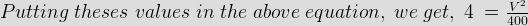
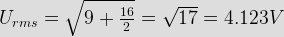
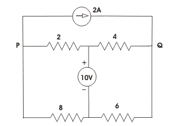
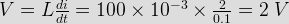
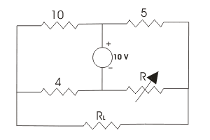
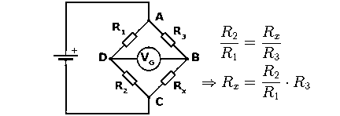
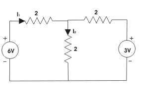
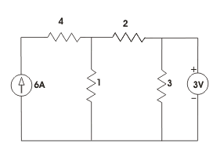
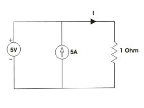

- If E1 = Asinωt and E2 = Asin(ωt - θ), then
At ωt = 0, E1 = 0 &s; E2 = Asin(- θ) = - Asinθ.
From, the expression of E1 = Asinωt and E2 = A.sin(ωt - θ), it is clear that, E2 crosses zero t = θ ⁄ ω sec after that of E1.
Therefore, it can be concluded that E1 leads E2 by θ. - Two sinusoidal quantities are said to be phase quadrature, when their phase difference is
Two sinusoidal quantities are said to be phase quadrature, when their phase difference is 90°.
- The equation for 25 cycles electric current sine wave having rms value of 30 amps, will be
General equation of sinusoidal electric current quantity is Imsinωt = Imsin2πft.
Where, Im is the maximum ampletude of the electric current wave, f is the frequency or cycle per second.
Here, rms value of electric current is 30 A.
∴ Maximum amplitude of the electric current wave form Im = √2 × 30 = 42.4 A and frequency f is here 25 Hz. Hence, the electric current equation will be 42.4sin2π25t = 42.4sin50πt. - What will be the rms value of rectangular wave with amplitude 10 V
RMS value means, root mean square value of a wane. A rectangular voltage wave has constant amplitude in both positive and negative direction. Hence the mean value and its amplitude will be identical. Therefore square root of square of the mean value of amplitude is same as amplitude of the wave.
- The equation of an emf is given by e = Im[√(R2 + 4ω2L2)]sin2ωt. The amplitude of the wave will be
The general form of emf equation is e = Vmsinωt ......(1)
Where, Vm is the amplitude of the voltage wave.
Here, the given equation is e = Im[(R2 + 4ω2L2)1/2]sin2ωt ......(2)
Now, Comparing equation (1) &s; (2) we can conclude that amplitude of the given emf equation is Im[(R2 + 4ω2L2)1/2]. - The RMS value of sinusoidal voltage wave v = 200sinωt, is
The peak value of given voltage wave is 200 V. Therefore the RMS value will be 200 ⁄ √2 = 100√2 volts.
- If one cycle of ac waveform occurs every milli - second, the frequency will be
One cycle of ac waveform occurs every milli second means 1000 cycles of that waveform occur in one second. The numbers of cycles of waveform per second is the frequency of that waveform.
- If emf in a given circuit is given by e = 100sin628t, then maximum value of voltage and frequency will be
The emf equation is e = 100sin628t .....(1)
Again the general form of emf equation is e = Vmsin2πft ......(2)
Where, Vm is the voltage amplitude and f is the frequency.
Comparing, equations (1) &s; (2) we get,
Vm = 100 V and 2πf = 628 ⇒ 628/(2 × 3.24) ⇒ f = 628/6.28 = 100 Hz. - The value of supply voltage for 400 W, 4 ohm load is

Where, V is supply voltage and W is wattage rating of the lamp.
Here, W = 400 W and R = 4 Ω

⇒ V = 40 Volts. - Say A point has an absolute potential of 40 V and point B has an absolute potential of - 10 V, then what will be the value of VBA ?
VBA is defined as VB − VA = -10 - 40 = - 50 V.
- The rms value of the voltage U(t)= 3 + 4cos(3t)

- In the figure, the potential difference between points P and Q is
. - A coil of negligible resistance has an induction of 100 mH. The electric current passing through the coil changes from 2 A to 4 A at a uniform rate in 0.1 sec the voltage across the coil during this time would be ___ V.

- What is represented by the hypotenuse of impedance triangle?
Impedance triangle means the right angle triangle formed by the vectors representing the resistance drop, reactance drop & the impedance drop of the circuit carrying an alternating current.
- The phase angle difference between electric current and voltage is 90°, the power will be
The expression of active power P = VIcosθ.
Where, V is voltage, I is electric current and θ is the angle between electric current and voltage.
here, this θ = 90°
∴ Power P = VIcos90° = 0 [Since, cos90°= 0]. - Kirchhoff's laws are valid for
Linear circuits obey Ohm's law. Kirchhoff's laws are valid for those elements that obey Ohm's law.
- For the circuit shown below the value of R is adjusted so as to make the electric current in RL equal to zero. Calculate the value of R.

As per Wheatstone bridge principle: 10 / 4 = 5 / R ⇒ R = 4 / 10 × 5 ohms ⇒ R = 2 ohms. - In the circuit shown in figure if I1 = 1.5 A, then I2 will be
 - In the circuit shown in the figure the voltage across the 2 Ω resistor is
 - The value of electric current I flowing in the 1 Ω resistor in the circuit shown in the given figure will be

Design with  by SARU TECH
by SARU TECH
www.sarutech.com
Content Credited to electrical4u.com
Online Electrical Engineering Study Site